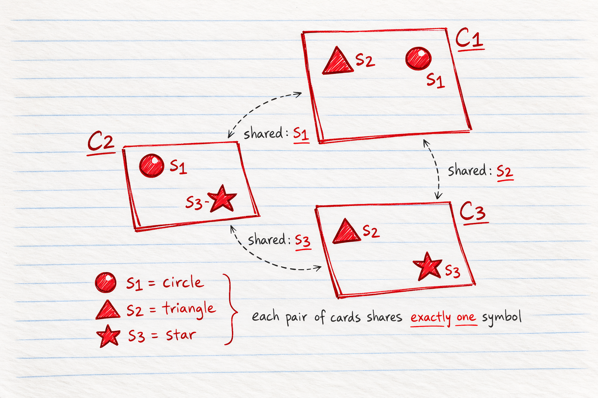
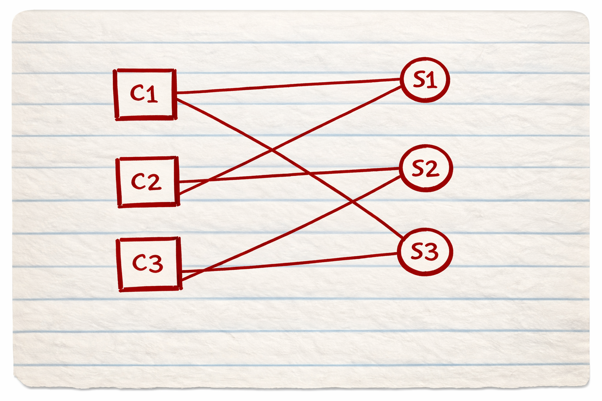
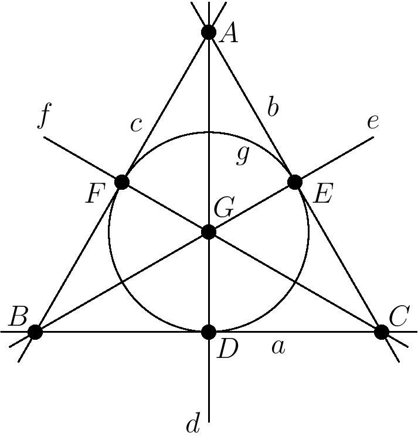

combinatorics • graph theory • finite geometry
Dobble graphs
March 20th, 2026
The world is slowly going insane, so let's write about something light. During my time at Los Alamos I could not write publicly about essentially anything because of the Lab rules I strictly adhered to. What I did instead was to write a lot of private notes. All these notes, that started initially as my course notes for the Stat Mech course at UMass I taught in 2019, turned into roughly 1600 pages of material. Each time I learned something new, I re-did the calculation in my own way or using some available materials. I had and I have a reminder in my calendar every week that I need to do it. My old notes merged with exercises from Juan Zanella and Diego Dalvit, and notes from Alioscia Hamma, into the three Volumes that ought to be published by Taylor & Francis next year. This time consuming exercise not only replaces sudoku, and keeps my brain active, but (jokingly) also became my alternative to a therapist :) As it turns out, I realized that this blog is a new version of those notes that instead of being in my own private folder, are publicly available. Eventually, I am sure, there will be also a lot of leftover material from my old notes, that did not go into the books, and that naturally I will add here, and maybe useful to somebody. The nature of this post resembles a lot the kind of notes that I used to have, with the difference that instead of becoming an exercise at the end of the chapters it becomes a blog post.
Now, to the topic of this post. A couple of weeks ago we met with some old friends.. and to keep the kid occupied (he was trying to jump out of the window), my friends suggested that we play some games. They had a bunch of card games, but the one we played was Dobble, the card game where you have to spot the common symbol between two cards. The kid loved it, it is fast, chaotic enough, and as a game it just works. It might be called also Spot it! in the US. The game is extremely simple, superficially. You put one card on the table, then draw another from the deck, and the whole point is to spot the common symbol between the two cards. But after a few rounds I stopped looking at it as just a game and started looking at the combinatorics instead. Wait, how does this work? I bought it, played a bit more, and the first available weekend I sat down to try to understand how it works. We just submitted Volume 3 to the editor and I have a bit of spare time. While it is a very simple game, the combinatorial structure behind is quite rich.
The rule is very clean: for any two cards, there is exactly one common symbol. This means that each time you compare two cards, you are guaranteed to find exactly one match. The moment you say it like that, it stops sounding like a toy and starts sounding like a very constrained mathematical object. What I am about to say might sound crazy, but I never read the arXiv. The reason is simple: I prefer to think on my own rather than following trends, and also try to think independently. I apply this rule also outside, so if I have the time, I try to think about a problem on my own, and then after I search if anybody else solved. This is one of those cases.. this means that I have two solutions to the same problem, one very wasteful in terms of symbols, and the real one. In fact, it is naturally described as an incidence problem, or if one prefers, as a bipartite graph: one set of nodes for the cards, one set for the symbols, and edges telling you which symbol appears on which card. Two cards contain the same symbol if and only if they share a common neighbor in the graph. The rule of the game is converted to the graph theoretical rule that any two cards (nodes of this graph) share exactly one symbol, which means that any two nodes on the "card" side of the graph have exactly one common neighbor on the "symbol" side. I will tell you my version of the story, how I did construct the graph as a solution of the only one symbol between two pairs of cards. However, as I will explain in this post I realized that my construction could have not been the solution (I explain why along the way). Then I searched online, and have found that other people also wrote about it and it is indeed much deeper than I expected.
Anyway.. Once I started thinking about it that graph theoretical way, the key questions became obvious. First, how do you build such a graph? Second, if you want to do it with the smallest possible number of symbols while keeping the rule intact, how many such graphs are there? The third part is instead the narrative that I found after I thought about it on my own, which is indeed much deeper. That is what I want to discuss in this post.

So.. to recap, the plan is to formulate the Dobble deck as a bipartite incidence graph with this uniqueness property, then ask how such objects can be constructed and what the minimal construction really looks like. Once the problem is written in the right language, the structure becomes much easier to see.
1. The rules as a graph problem
Let me write the game in a way that makes the combinatorics obvious. Think of a deck of cards, each card carrying a collection of symbols. The defining rule of Dobble is that for any two distinct cards, there is exactly one symbol that appears on both. That is the whole game mechanic, but also the whole mathematical constraint.
The natural way to encode this is as an incidence graph, which is a bipartite graph. On one side we put the cards, on the other side the symbols, and we draw an edge between a card and a symbol whenever that symbol appears on that card. So the deck becomes a bipartite graph

$$ G=(V_C \sqcup V_S,E), $$
where $V_C$ is the set of card-vertices, $V_S$ is the set of symbol-vertices, and $$ (c,s)\in E $$ precisely when symbol $s$ is printed on card $c$.
In this language, the Dobble rule says something very clean: any two distinct card-vertices must have exactly one common neighbor in the symbol part. In formulas, if $N(c)$ denotes the set of symbol-neighbors of a card $c$, then for any two cards $c\neq c'$ we require
$$ |N(c)\cap N(c')|=1. $$
So this is not just any bipartite graph. It is a very constrained incidence structure: the card side is arranged so that every pair of cards meets in exactly one symbol. Already from this point of view one can ask two different kinds of questions. One is constructive: how do we build such graphs? The other is extremal: what is the smallest number of symbols needed for a given number of cards? Well, mine is very wasteful.
Before getting to the general construction, it is useful to look at the smallest nontrivial example. Suppose we have just three cards. Then the condition says that each pair of cards must share exactly one symbol. The simplest way to do that is to introduce three symbols: one shared by cards 1 and 2, one shared by cards 1 and 3, and one shared by cards 2 and 3. The corresponding incidence graph is shown below.
Each edge means that a symbol appears on a card. The condition that every pair of cards shares exactly one symbol becomes the statement that every pair of card-vertices has exactly one common neighbor on the symbol side.
2. A constructive method
Before discussing how actually Dobble is constructed, let me now describe the most direct construction I could think of. It is not deep, but it is clean, and it immediately gives both a valid deck and the correct counting. The idea is simple: whenever a new card is added, it must share exactly one symbol with each of the cards that already exist. So for each previous card, we introduce one fresh symbol and place it on that pair of cards.
To make this precise, suppose we want to construct $M$ cards $$ C_1,C_2,\dots,C_M, $$ with the rule that any two cards share exactly one symbol. I will assume here that each symbol is used to represent exactly one pair of cards. In the bipartite graph picture, this means every symbol-vertex has degree $2$.
The inductive procedure is the following. It also serves to show that a "Dobble graph" exists for any number of cards.
Start with the first card $C_1$. At this stage no symbol is needed yet, since there is no other card to compare it with.
Add the second card $C_2$. Now the pair $(C_1,C_2)$ must share exactly one symbol, so we introduce one new symbol and place it on both cards.
Add the third card $C_3$. It must share one symbol with $C_1$ and one symbol with $C_2$, so we introduce two new symbols: one placed on $C_3$ and $C_1$, and one placed on $C_3$ and $C_2$.
Continuing in the same way, when we add the $n$-th card $C_n$, it must share exactly one symbol with each of the previous cards $$ C_1,\dots,C_{n-1}. $$ Therefore we must introduce exactly $n-1$ new symbols, one for each pair $$ (C_n,C_i), \qquad i=1,\dots,n-1. $$
In other words, for every unordered pair of cards $\{C_i,C_j\}$, we create one dedicated symbol $s_{ij}$, and we place that symbol on exactly those two cards. Equivalently,
$$ s_{ij}\in C_i \cap C_j, \qquad 1\le i<j\le M, $$
and no other card contains $s_{ij}$.
This immediately guarantees the desired property: for any two distinct cards $C_i$ and $C_j$, the only symbol they have in common is precisely $s_{ij}$. Hence
$$ |C_i\cap C_j|=1 \qquad \text{for all } i\neq j. $$
Now for the count. When the $n$-th card is added, we introduce $n-1$ new symbols. So the total number of symbols is
$$ \sum_{n=2}^{M}(n-1)=1+2+\cdots+(M-1)=\frac{M(M-1)}{2}. $$
So the correct answer, given this construction, is:
$$ N_{\mathrm{sym}}=\binom{M}{2}=\frac{M(M-1)}{2}. $$
e.g., Gauss' formula. This is exactly what the inductive construction gives. When the card $C_\ell$ is added, it must share one symbol with each of the $\ell-1$ previous cards, so we introduce exactly $\ell-1$ new symbols. Therefore the total number of symbols is
$$ \sum_{\ell=1}^{M} (\ell-1)=\frac{M(M-1)}{2}. $$
In that sense, the symbols are indexed by unordered pairs of cards. But the actual object we build is still the bipartite incidence graph: cards on one side, symbols on the other, with an edge meaning that a given symbol appears on a given card.
So the bipartite graph has:
- $M$ card-vertices,
- $\frac{M(M-1)}{2}$ symbol-vertices,
- and each symbol-vertex $s_{ij}$ is connected exactly to the two card-vertices $C_i$ and $C_j$.
In particular, each card $C_i$ is connected to all symbols $s_{ij}$ with $j\neq i$, so each card contains exactly $M-1$ symbols.
3. Minimal number of symbols, $PG(2,7)$, and a detour through the octonions
My previous construction was perfectly fine, but also extremely wasteful. There I gave every pair of cards its own dedicated symbol. That guarantees the rule, of course, but it scales like $$ \binom{M}{2}, $$ because there is one fresh symbol for every unordered pair of cards. For $M=55$, that would mean $1485$ symbols, which is clearly not what happens in the actual game. That is when I started searching online and found this video that explains how Dobble really works.
The one thing my construction has going for it is flexibility: it works for an arbitrary number $M$ of cards. If you want 11 cards, or 37, or 55, you just keep going. The efficient Dobble construction is much more rigid. It uses a finite projective plane, so in principle the total number of cards is not arbitrary, but must be of the form
$$ N^2+N+1$$,
where each card then carries $N+1$ symbols. In the Dobble case one wants $8$ symbols per card, so $N=7$, and the ideal mathematical deck has$$ 7^2+7+1=57 $$ cards.
So there is a tradeoff. My construction works for any deck size, but it is terribly inefficient. The Dobble construction is dramatically more economical, but it only works at those special sizes allowed by finite projective planes. However, you can still get a smaller deck by removing some cards from the ideal $57$-card construction, and that is what the commercial deck does.
The commercial deck is much more clever than we described earlier.. in Dobble, every card has $8$ symbols, and the standard box contains $55$ cards, but that deck is really a subset of a mathematically complete $57$-card construction. The underlying object is a finite projective plane, specifically $PG(2,7)$. In that ideal construction, there are $57$ cards, $57$ symbols, each card contains $8$ symbols, each symbol appears on $8$ cards, and any two cards still share exactly one symbol.
That is when I understood that the real magic of Dobble is not just that any two cards share exactly one symbol, but that the same symbol can be reused on many cards, while still keeping the rule intact.
So the real trick is not “one symbol per pair of cards.” The real trick is that the same symbol can be reused on many cards, but in a globally consistent way. My construction enforced the matching rule locally, pair by pair. The projective-plane construction enforces it globally, by geometry. This means that there are multiple pair of cards that can have the same symbol, but between two pairs of cards there is only one.
Let me say what $PG(2,7)$ means in concrete terms. A projective plane is a collection of points and lines satisfying a very rigid set of rules:
- any two distinct points lie on exactly one line,
- any two distinct lines meet in exactly one point,
- each line contains the same number of points,
- and each point lies on the same number of lines.
For a projective plane of order $N$, these numbers are forced:
$$ \#\text{points}=\#\text{lines}=N^2+N+1, \qquad \text{points per line}=N+1. $$
In Dobble, the number of symbols on each card is $8$, so we want
$$ N+1=8, $$
which means
$$ N=7. $$
Therefore the relevant geometry is $PG(2,7)$, and the total number of points and lines is
$$ 7^2+7+1=57. $$
This is exactly why the full ideal deck has $57$ cards and $57$ symbols, even though the commercial deck usually ships with $55$ cards.
The dictionary with the game is then immediate:
$$ \text{symbols} \longleftrightarrow \text{points}, \qquad \text{cards} \longleftrightarrow \text{lines}. $$
A symbol appears on a card precisely when the corresponding point lies on the corresponding line. Once you say that out loud, the Dobble rule becomes almost embarrassingly simple:
$$ \text{“any two cards share exactly one symbol”} \quad\Longleftrightarrow\quad \text{“any two lines meet in exactly one point.”} $$
So the game is really just projective geometry in disguise. What looks like a toy constraint is actually a finite geometric design. In graph language, one may build a bipartite graph with card-nodes on one side, symbol-nodes on the other, and an edge meaning “this symbol is on this card.” Then the whole game reduces to one invariant: every pair of card-nodes has exactly one common symbol-neighbor. That is exactly how the graph-based reconstruction in the Dobble writeup phrases it.
At this point I could not help thinking of a much smaller and much more famous picture: the Fano plane. This is the smallest projective plane, namely $PG(2,2)$. It has
$$ 2^2+2+1=7 $$

points and also $7$ lines, with $3$ points on each line. It is the little triangular diagram that many physicists and algebraists know by heart because it encodes the multiplication rules of the octonions.
This is where the connection to the octonions comes in. It is not that Dobble literally is the octonions, nor that $PG(2,7)$ is the same object as the octonion multiplication table. The correct statement is more interesting anyway: the octonions use the smallest projective plane, while Dobble uses a larger one of the same species.
In the $PG(2,2) representation, the octonionic imaginary units $e_1,\dots,e_7$ are arranged according to the Fano-plane diagram, and any three imaginary units lying on a directed line behave like a quaternionic triple. The paper states explicitly that the $e_n$ multiply according to Fig. 2, and that any three imaginary units on a directed line segment act as if they were a quaternionic triple.
In practice, this means that if a directed line contains three units $e_i,e_j,e_k$ in cyclic order, then their multiplication follows the quaternionic pattern:
$$ e_i e_j = e_k, \qquad e_j e_i = -\,e_k, $$
together with
$$ e_i^2=-1. $$
So in the octonionic setting, the Fano plane is not just representing cards. It is a compact incidence diagram that tells you which triples of imaginary units multiply into one another. The lines no longer represent cards; they represent multiplication triples.
This is exactly why it reminded me of Cohl Furey’s use of the Dixon algebra. I know Cohl's since the time of Perimeter, and I had my desk next to her's in the library when she was working on that paper. I went to re-read that paper to try to recall what the exact construction was. In her “unified theory of ideals,” the point is that one can look for particle sectors as generalized ideals of the algebra $$ \mathbb R\otimes \mathbb C\otimes \mathbb H\otimes \mathbb O, $$ with $\mathbb C\otimes\mathbb H$ organizing Lorentz representations and $\mathbb C\otimes\mathbb O$ organizing the internal degrees of freedom of one generation of quarks and leptons. This is stated already in the abstract and summarized in Fig. 1 of the paper.
The relevant point for me here is not whether that program is ultimately right in physics. The relevant point is structural. The same kind of finite incidence diagram that appears in the Dobble story reappears in the octonionic story. In Dobble, incidence tells you which symbol sits on which card. In the octonions, incidence tells you which imaginary units sit on which multiplication triple.
Cohl pushes that one step further, and I have always found her construction quite elegant. The paper argues that $\mathbb C\otimes\mathbb O$ carries a full generation of fermions as a basis, and in particular notes that the eigenvectors of the operator $$ \frac{i e_7}{2} $$ give a full generation of fermions as a basis for $\mathbb C\otimes\mathbb O$. It also emphasizes that the octonions may be viewed as a net of quaternionic triples, exactly the perspective suggested by the Fano plane.
So the link I have in mind is not “Dobble secretly is octonionic physics,” which would be nonsense. The link is that both examples are governed by the same kind of combinatorial skeleton: a finite projective-plane incidence structure. In one case it organizes overlaps of cards. In the other case it organizes multiplication rules, and in Cohl's framework those multiplication rules are then used to build particle representations inside the Dixon algebra.